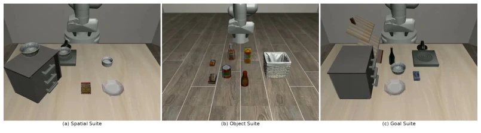
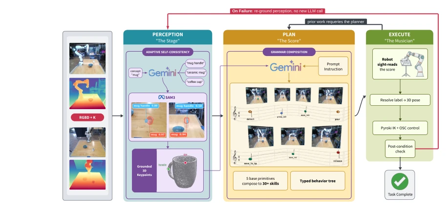
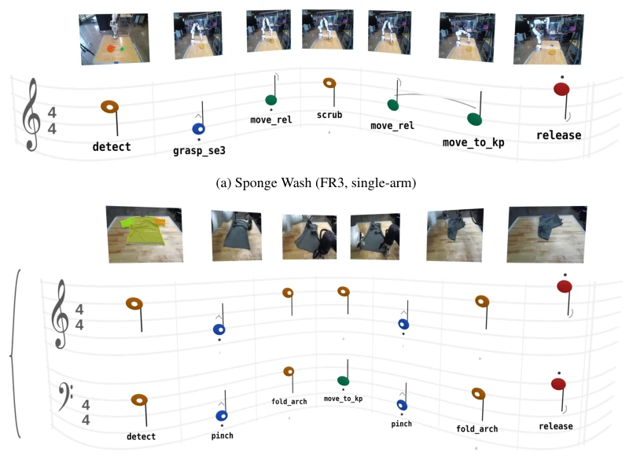
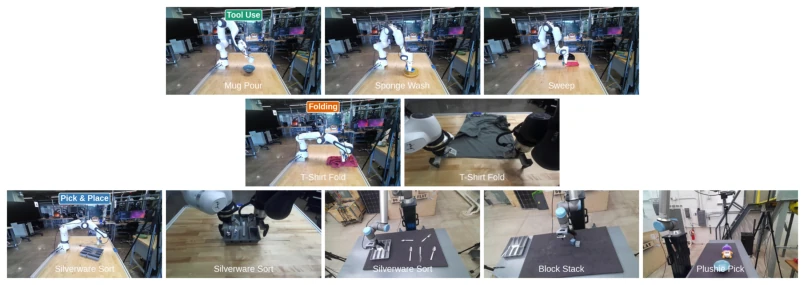
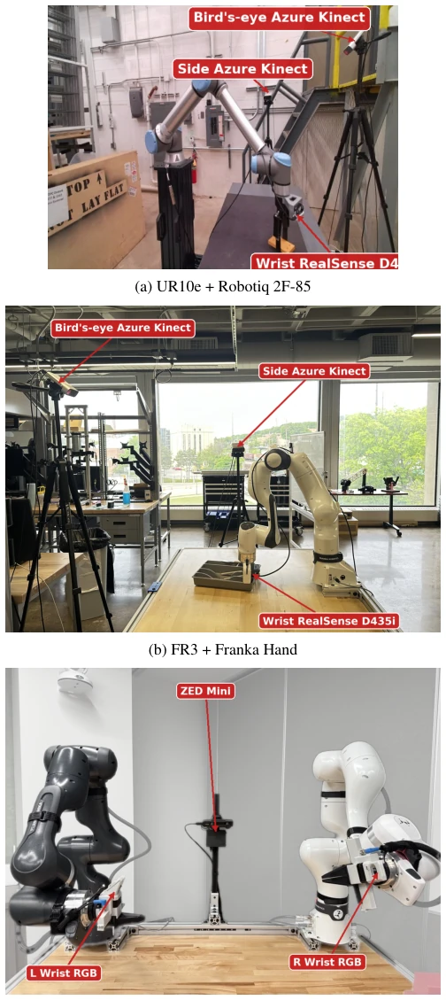
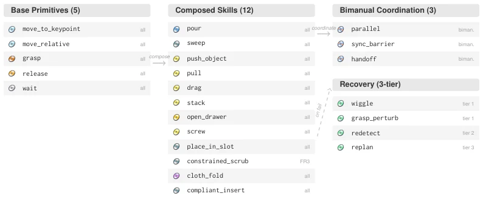
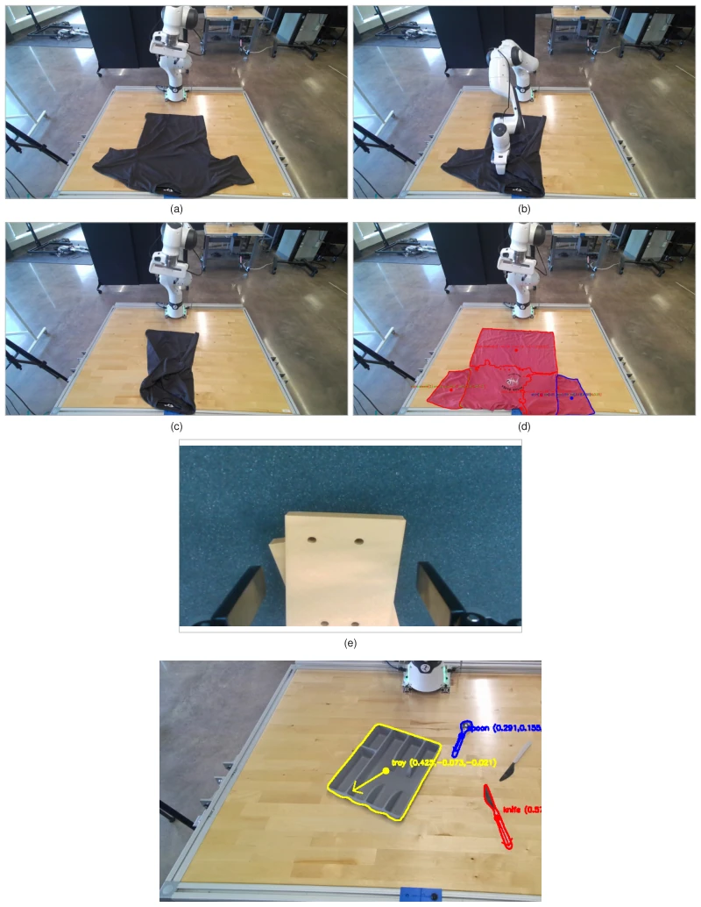
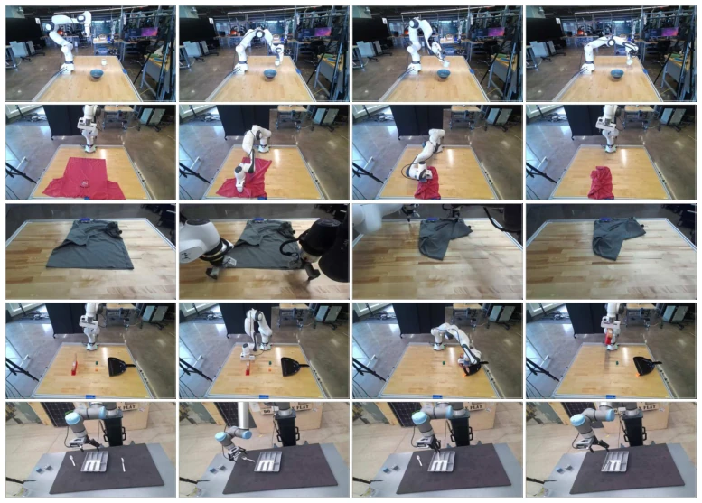

The name SPARK is quite striking, but its essence is "shifting compute from planning to perception". VLAs collapse on LIBERO-PRO because they rote memorize trajectories; SPARK uses a neuro-symbolic architecture to forcibly fix plans into behavior trees. When errors occur, it does not recalculate the LLM, but re-locates objects. This approach works well under spatial perturbation, with physical experiments averaging 68%, indeed saving compute compared to CAP-AGENT0. But do not celebrate too soon; once the task goal changes (e.g., changing a drawer), adaptive prompts instead backfire, indicating it still does not truly understand semantics, just finding things in a different way. Although claimed to be training-free, physical deployment still requires adjusting IK parameters and force control curves for each manipulator; what kind of zero-shot is this?
Existing end-to-end VLA models [1-3] perform excellently on standard LIBERO, but once object positions or task descriptions are adjusted, performance drops to zero directly [6]. This is because VLAs encode absolute position features, lacking object-level abstraction [7, 8]. Code-as-Policy methods like CAP-AGENT0 [9] attempt to fix failures through multi-turn code generation, but each retry requires re-calling the LLM, making computational costs high and reactions to minor strategy failures sluggish. SPARK posits that position/description changes primarily affect pixel localization rather than plan structure, therefore test-time compute should be allocated to the perception layer, rather than reconstructing the plan.

Figure 4: Representative LIBERO-PRO simulation environments. (a) Spatial suite: bowl pick-and- place with position perturbation across kitchen fixtures. (b) Object suite: grocery items into a basket with object substitution. (c) Goal suite: multi-step tasks involving drawers, stove, and cabinet with goal redefinition.
方法Method
SPARK 包含四个模块：SAM3 感知、Gemini 规划、IK 控制、分层恢复。首先，SAM3 通过自适应自一致性（每个物体生成 3 个提示词）获取 3D 关键点，解决开放词汇检测问题。接着，Gemini 基于固定语法生成行为树（BT），包含 5 个基础原语（移动、抓取等）和 30+ 组合技能，这些技能封装了底层控制逻辑。执行时，机器人实时解析关键点标签到 3D 位姿，通过 IK 控制器驱动。若原语失败，系统不重调 LLM，而是先尝试原位扰动，再重新运行 SAM3 检测并重试同一计划。这种设计将感知与符号计划解耦，使得感知模块可独立更新而不影响规划逻辑，且每个原语的后验条件检查能精确定位故障模块。此外，系统无需训练即可跨不同机器人平台部署，仅依赖物理参数调整。
SPARK comprises four modules: SAM3 perception, Gemini planning, IK control, and hierarchical recovery. First, SAM3 obtains 3D keypoints through adaptive self-consistency (generating 3 prompts per object), solving the open-vocabulary detection problem. Next, Gemini generates a behavior tree (BT) based on fixed grammar, containing 5 basic primitives (move, grasp, etc.) and 30+ composite skills, which encapsulate low-level control logic. During execution, the robot parses keypoint labels to 3D poses in real-time, driven by an IK controller. If a primitive fails, the system does not re-call the LLM, but first attempts in-situ perturbation, then re-runs SAM3 detection and retries the same plan. This design decouples perception and symbolic planning, allowing the perception module to be updated independently without affecting planning logic, and post-condition checks for each primitive can precisely locate fault modules. Additionally, the system can be deployed across different robot platforms without training, relying only on physical parameter adjustments.

Figure 1: SPARK pipeline. SAM3 grounds each object to 3D keypoints, sharpened by adaptive perception self-consistency: three alternative text prompts per object, keeping the most accurate detection. Given the annotated image, the detected keypoints, and the instruction, one Gemini call composes a typed behavior tree over five base primitives and the skills they extend. The robot resolves each keypoint label to a 3D pose at runtime and executes under per-primitive post-condition checks. A failed check re-grounds perception and retries the same plan without another LLM call. Figure 7 shows the score notation for two physical tasks.

Figure 7: Score notation for two physical tasks. Note position encodes action category, duration encodes action type, and dynamics encode gripper force.
Under LIBERO-PRO position and task perturbations, SPARK achieves a 43.7% success rate, surpassing CAP-AGENT0 (18.2%) and RATS (43.8%), especially with obvious advantages in spatial suites. Physical experiments average 68% on UR10e, FR3, and dual-finger Franka. Ablation shows adaptive perception prompts significantly improve under spatial perturbation (+27.7 points), but decline under task goal perturbation. The recovery loop contributes approximately a 5% improvement. On CAP-BENCH, single-step planning matches CAP-AGENT0's multi-turn effect, but there is still a gap in tasks requiring mid-process feedback (e.g., wiping).

Figure 2: All physical tasks across three embodiments
其他图片Other Figures

Figure 3: Camera rigs for the three physical platforms, with each camera labelled in-image. The single-arm platforms (a, b) use a bird’s-eye and a side Azure Kinect DK plus a wrist RealSense D435i. The bimanual workcell (c) replaces the side camera with a single rear ZED Mini facing the workspace and adds one wrist OV9732 camera per arm. In simulation, LIBERO-PRO fixes the rig to the standard agentview third-person camera and the robot0 eye in hand wrist camera; we do not modify camera placement.

Figure 6: The SPARK primitive library. Five base primitives (left) compose into the manipulation and tool-use skills (center) and bimanual coordination nodes (right). The three-tier recovery hier- archy escalates from in-place perturbation (wiggle, grasp perturb) to perception re-grounding (redetect) to plan regeneration (replan); the reported experiments exercise only the first two tiers.

Figure 8: Perception-driven failure modes. (a)–(d) Garment folding: (a) dark shirt laid flat, (b) sleeves folded inward successfully, (c) hem fold fails because SAM3 cannot resolve the hem bound- ary on dark fabric, (d) Red shirt masks showing sleeve masks that bleed into the body region with ambiguous left/right labeling. (e) Block stacking: wrist-camera refinement introduces a lateral offset on wide gold blocks, causing the gripper to grasp off-center and misalign the stack. (f) Utensil-scene grounding: the tray major axis from the OBB is mis-aligned causing poor slot placement with the utensils, so silverware tasks use grasp se3 in place of an OBB-derived gripper yaw.

Figure 9: Physical execution sequences. Each row shows four keyframes of a single task: mug pour (FR3), t-shirt fold (FR3), bimanual fold (Panda + FR3), sweep to dustpan (FR3), and silverware sort (UR10e). The same typed BT grammar and SAM3 pipeline run across all three platforms with no task-specific training.